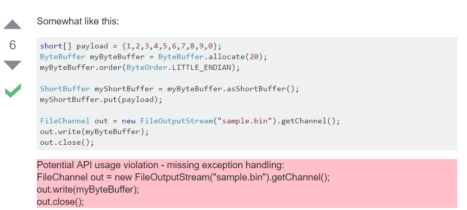

Project Journal
Week 1 (May 22 - May 26)
Dr. Kim and Tianyi were at ICSE 2017 this week, so I was able to get to know Westwood and UCLA. I met Dr. Kim's other grad students, Gulzar and Shaghayegh, who got me settled into the CS lab.
My work this week was to come up with a sketch of a UI for Dr. Kim and Tianyi's project, Maple, and also to learn about developing Chrome extensions. I came up with a rough prototype of what the extension could look like, so I'll have to see what Dr. Kim and Tianyi think of it.
The gist of their project is to, in Tianyi's words, "assess the reliability of Stack Overflow snippets using API usage patterns mined from Github." The Chrome extension that I'll be helping develop would flag code examples on Stack Overflow that have potential API usage violations, and provide solutions.
Week 2 (May 29 - June 2)
I met Dr. Kim and Tianyi this week, and we discussed the long-term goals of my project this summer. Ideally, I could develop the UI and then we could do some human tests and write that into a paper.
This week I had to create a mockup of the UI for Dr. Kim and Tianyi to give feedback on. I made sketches of how it would augment StackOverflow, the use cases, and what a popup might look like.
At first, I had been considering an augmentation of the site that would appear under the code box in violation, like so:

However, after talking it over with Tianyi, he pointed out that a UI like Codota's code browsing assistant would be cleaner and more sophisticated. I agree, so right now I'm
using Codota as my primary source of inspiration, as well as a few HCI papers Tianyi sent my way. My current tooltip/popup look would be something like this:
The violating code lines would be highlighted when the user loads the page, and hovering over the highlighted text with the mouse would cause the tooltip to appear. Clicking on the highlighted text would make the tooltip stay visible until a mouse click is registered outside of the highlighted text. I also thought a copy-button like Codota's could be a nice feature for users who would want to copy Maple's solution from the tooltip.
Week 3 (June 5 - June 9)
This week I made some real progress in my UI mockup; I'm almost done with hardcoding the prototype and then we can see about hooking it up to Maple on a server! However, right now I'm stuck on the trickiest part (in my opinion so far), which is to make the dialog popup show multiple solutions by letting a user see different "pages" of the dialog.
You can see what I'm getting at with this screenshot of the UI so far:
I'm using the jQuery UI library's dialog widget with Bootstrap for the pagination buttons. However, pagination in Bootstrap is generally used for actually directing the user to different web pages, not frames or divs of a dialog. Since I have limited experience with popups/dialogs, I'm still trying to determine if this is the right path to go down. I was doing more research yesterday and I think if I can make the dialog a div of divs, where each div is a different "frame" of the dialog, then I can set the inactive divs' display to "none," which effectively takes them out of the document (instead of turning visibility to "hidden," so they still take up "space" on the page). Then the pagination buttons can toggle the display of each div. I don't know if that's too hacky of a solution, but I think I might as well try it and see what Tianyi thinks of it.
In other news, on Tuesday Dr. Kim, Tianyi, and I had a Skype call with Dr. Björn Hartmann from UC Berkeley, who has some students working on a similar project from an HCI perspective. We're hoping to get some HCI feedback from them on our project, as well as generally collaborate with our findings, methods, etc. They would also be great help if they want to assist us with creating a user study for the UI once it's ready.
I have to say I'm pretty pleased with how the UI is looking so far; it's so much nicer than it was last week!
Week 4 (June 12 - June 16)
This week was pretty frustrating. I spent all of it trying to get pagination to work, to no avail. I switched libraries several times and tried every possible combination of the jQuery UI Dialog/Bootstrap popover with "Sweet Pages"/Bootstrap pagination.
There were multiple problems with each solution I attempted. I liked the look of Sweet Pages, and it was one of the few pagination solutions I could find online that you didn't have to hack to make it paginate within a div. However, trying to integrate it with a dialog/popover completely trashed it because the different panels wouldn't line up right and the special CSS it needed messed up everything (and I don't have the CSS skills to fix it). After going back and forth with different libraries, I ended up deciding to do an all-Bootstrap solution, which still doesn't work completely but I'm sticking with it.
The current iteration of my solution uses a pagination script based on this example. Right now Tianyi is working on helping me debug it; the problem is that the script doesn't recognize when the buttons are clicked, so a pagination-button click just defaults to sending the user to the top of the page.
Update: We've just discovered that the script is not being injected correctly into the page, so it only runs once and then it doesn't run again, which is why it doesn't register mouse-clicks. So now I need to rework how I'm injecting the script into the StackOverflow page.
Tianyi has been really helpful with this issue in more ways than one. I was feeling frustrated with my solutions not working, but he reminded me in an email that finding that something isn't working is progress -- and part of research. So I've been learning through this episode to take issues like this in stride and not to get too stressed about feeling "held back" when it takes awhile to find a working solution for a problem. I've also been learning a lot about Chrome extension development!
I'm taking this coming week off to go to Texas for my friend's wedding, but when I get back I'll work on fixing this pagination problem and move on. Our next step is to have the extension read test data and create popups based on that, I think. I'll be discussing it in more detail with Tianyi when I get back, so more on that next week! For now, here is the current look of the extension using the Bootstrap popover instead of the jQuery UI Dialog (and Bootstrap pagination without nice CSS -- I'll fix that):